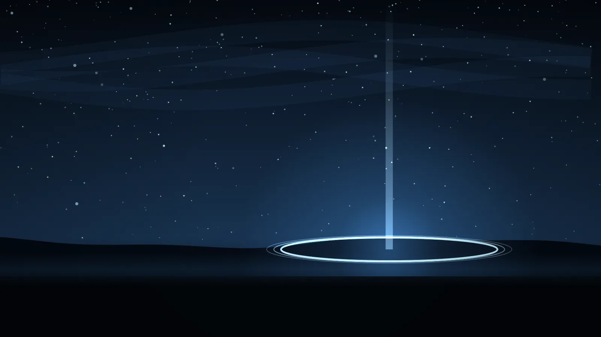
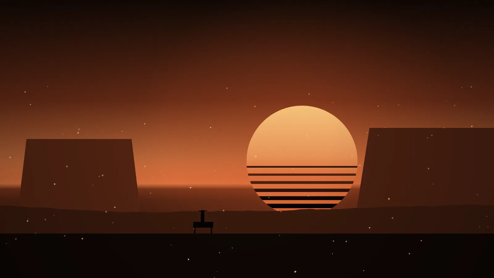
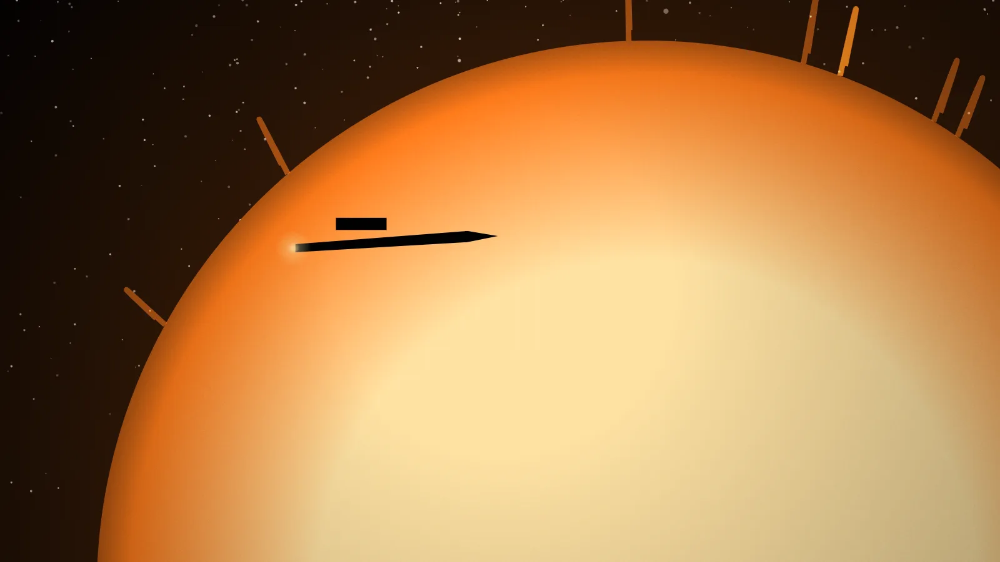
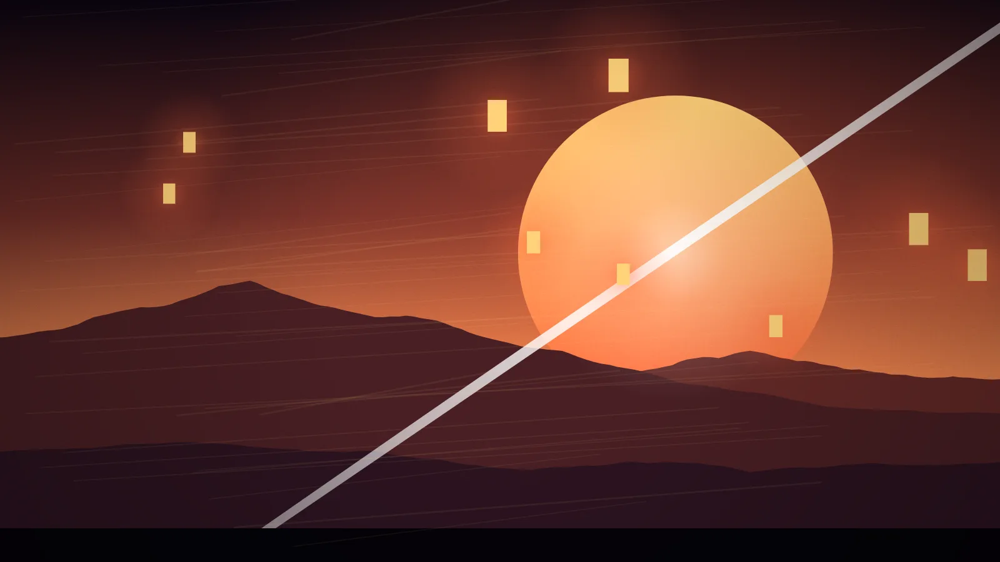
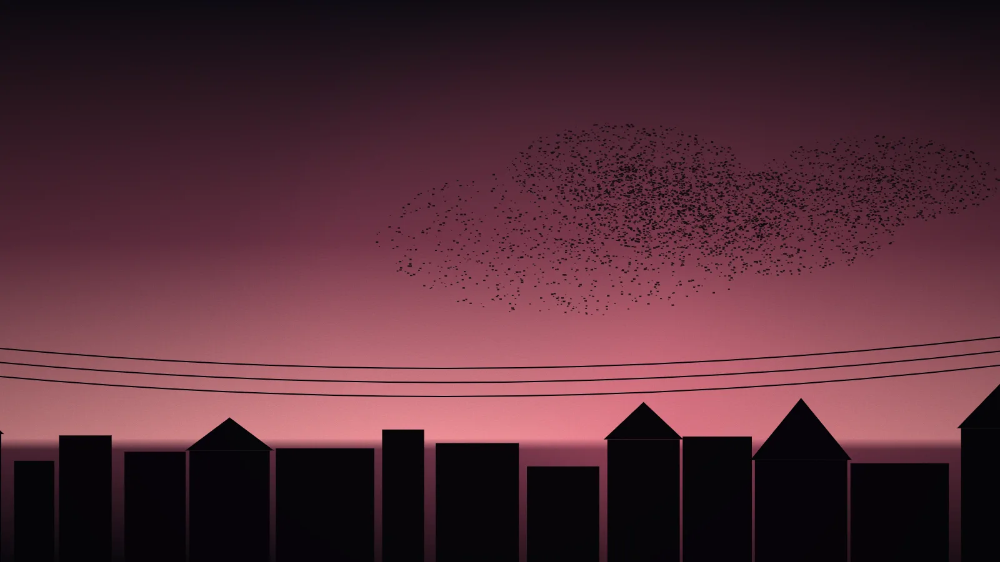
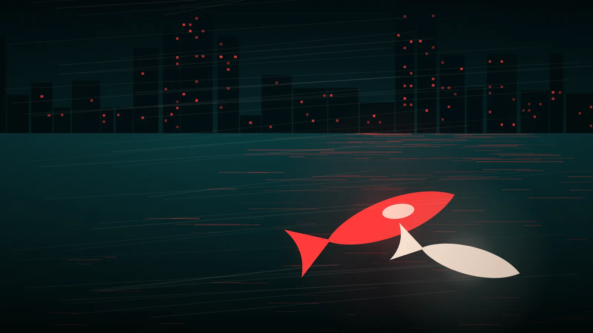

CineShelf turns the folders of TV shows, movies and anime on your drives into a library you can browse like a streaming service. It plays through a real VLC player under its own controls, offline, with no account and no subscription.
57 seconds, with sound and captions. Every title, poster and episode in the demo is invented.

Hero carousel, Recently Watched, your own shelves.

Seasons, episodes, progress and resume points.

Collections and rows you arrange yourself.

Canon, mixed and filler flags on every episode.

Move to the bottom edge for controls, the right edge for the playlist.

Everything in one grid, by type.
Point it at the drives where your shows, movies and anime live. It finds seasons and episodes on its own.
Posters, backdrops, cast and episode details come from TMDB, AniList and Jikan, and are cached locally.
A real VLC process decodes the video. CineShelf draws its own overlay on top: tracks, subtitles, aspect ratio, playlist.
Watch progress, resume points, favourites and custom rows, stored on your machine.